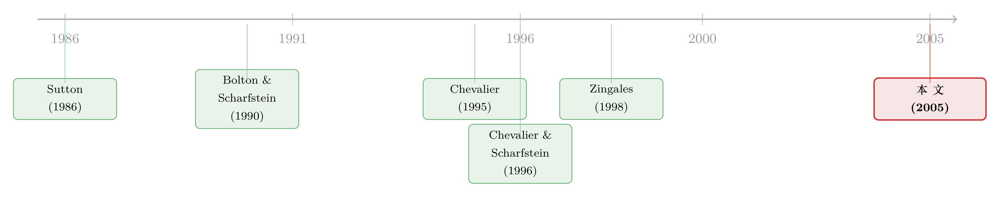

深口袋的价格战：藏在折扣店货架上的「掠夺」指纹
本文读的是 Khanna & Tice (2005, Journal of Financial Economics)：作者用 1982–1995 年美国折扣百货连锁店在各城市的价格、退出与选址数据，把「高负债」和「低效率」这两个常被混为一谈的「虚弱信号」拆开来看。结论是——平时两者都让市场价格更高（软竞争）；但一旦衰退来袭，在高低负债firms混居的城市里，负债越高、价格反而越低，而被价格战逼退的，恰恰是那些又有效率、又被债务捆住手脚的对手。这是「深口袋掠夺」最接近实锤的一道指纹。
1 一个吵了很久、却总也证不实的问题
金融学里有一个听上去很「江湖」的故事：财大气粗的公司，会故意把价格压到亏本，把那些借了一身债、扛不住现金流断流的对手活活耗死，等对手退场之后，再把价格抬回去，连本带利地赚回来。这就是 掠夺性定价 (predatory pricing)。
故事很动人，可它有一个致命的麻烦：几乎没法证实。你看到一家公司在降价，到底是它在「掠夺」，还是市场本来就该这么便宜？你看到一家高负债公司退场，到底是被对手「逼」走的，还是它自己经营不善、活该出局？价格和退出都是均衡的结果，原因藏在水面之下。
更要命的是，连前人给出的答案都互相打架。Chevalier (1995a) 研究超市行业的 杠杆收购 (leveraged buyout, LBO)，发现在主要对手没有做 LBO 的市场里，价格会下跌、LBO 超市更容易退场——她把这解读成非 LBO 对手在「逼宫」。可 Zingales (1998) 研究卡车运输业放松管制，却发现高杠杆公司自己就在收更低的价格。两个故事的符号是反的。Zingales 的解释是：在关系资本重的行业，低价不是为了逼人退场，而是给客户的「破产风险补偿」。
所以问题悬而未决：高负债到底是让市场价格变高（软竞争）还是变低（掠夺/补偿）？这取决于很多东西——行业、关系资本、有没有外生冲击。Khanna 和 Tice 的聪明之处，是找到了一个能把这些情形干净切开的实验场。
2 为什么是折扣百货店，又为什么是衰退
要回答这个问题，你需要一个近乎「实验室」的行业。Khanna & Tice 挑中了美国的折扣百货连锁（discount department store，想想早年的 Kmart、Wal-Mart、Target 这类）。这个选择有三个绝妙之处：
首先，商品高度同质。 一管 6–7 盎司的高露洁牙膏、一条 Levi's 牛仔裤、一盒 175 抽的 Kleenex 面巾纸——全国都一样。这意味着不同城市之间的价格差异，可以干净地归因到「当地竞争对手长什么样」，而不是「卖的东西不一样」。
接着，一个自然的问题是：怎么把同一家全国连锁的财务状况，落到一个个城市里？ 这正是设计的关键。负债和技术（效率）是公司全国层面的决策，而价格、退出却发生在城市层面。于是反向因果的担忧被大大削弱了：一家连锁不太可能为了影响某几个城市的竞争格局，去改变自己整个公司的杠杆率。同样一家「高负债」的连锁，会同时出现在许多城市；它在不同城市面对的对手组合却千差万别。
然后是最妙的一步——把衰退 (recession) 当作冲击。 掠夺是有成本的：你得一直亏本压价，直到对手退场。要让这件事划算，必须有「对手大概率会很快退场」的前景。所以掠夺更可能发生在那些让对手们受伤程度不同的事件中——有人脆弱、有人结实。Chevalier 用 LBO 当这种事件，Lerner (1995) 用磁盘驱动器行业「外部股权融资受限」的时期当这种事件。Khanna & Tice 说：衰退也是这样一种事件。衰退是一次全行业的负向需求冲击，它压低所有人的经营利润、削减付息的现金流、收紧信贷——而高负债、低效率的公司在衰退里会比平时更脆弱。这恰恰给了「强者」一个动机：趁你病，要你命。
3 识别策略：把价格、退出、选址三件事串成一条逻辑链
这篇文章真正让我欣赏的，是它没有止步于「跑一个回归看符号」，而是把价格 → 退出 → 选址三件事编成了一条环环相扣的逻辑链。任何单独一块都不足以定案，但三块拼在一起，掠夺的故事就立体了。
基准的定价回归是这样写的（论文式 (1)）：
被解释变量是城市 j 第 t 年第一季度十种折扣店商品的价格指数（用全国 CPI 平减、以 1975 年美元计价）。右边的设计有几层心思值得说：
- 用「非折扣店商品」价格当控制。 同一城市里，理发、干洗、看电影、保龄球这些折扣店不卖的东西，它们的价格能吸收当地的一般物价水平、租金、工资等时变的城市冲击。这是一个很聪明的「安慰剂篮子」。
- 城市固定效应吸收掉那些「天生就贵 / 天生就便宜」的城市特质——只要这些特质不随时间变。
- 对剩下的时变内生性，再加两道保险：一是用上面那个非折扣篮子做控制；二是用 两阶段最小二乘 (two-stage least squares, 2SLS)，给城市的负债与效率水平找工具变量。
- 为了缓解「高负债的公司是不是在别的方面也虚弱」这个最要命的疑虑，他们还放进了连锁效率 × 负债水平的交互项，把「债」和「弱」尽量分开。
（关于「企业如何为一场尚未到来的价格战提前调整财务结构」，可参见《威胁还没来，债先「续」上了》；关于「债务约束如何在产品市场竞争中被重新分配」，可参见《捆在一起发债：多元化折价里，被忽略的那条「竞争」暗线》。）
4 三个假设：理论从何而来
本文的可检验含义来自 Klemperer (1987, 1995) 与 Chevalier & Scharfstein (1996) 的两期转换成本模型 (two-period switching cost model)。逻辑链条是这样一步步推下来的：
第一步，转换成本制造了「锁定」。消费者一旦在第一期选了某家店，第二期换店是有成本的。于是firms在第一期拼命抢市场份额——压低第一期价格、甚至亏本，因为份额能在第二期变现成利润。
第二步，这就形成了跨期权衡：如果第二期更重要，就该第一期压价抢份额；如果第二期不重要，第一期就该收高价。
第三步，虚弱的公司「不在乎第二期」。一家高负债或低效率、随时可能退场的公司，它的「第二期」是打折扣的——既然将来都不一定还在，何必为将来抢份额而牺牲眼前？所以它反而会在第一期收更高的价。又因为转换成本模型里价格是 策略互补 (strategic complements)，对手也会跟着抬价。于是——
假设 I：市场里若有一个低效率（高成本）对手，或一个退出概率（外生）更高的对手，均衡价格会更高。这就是「软竞争」。
但这个结论有一个前提——对手的退出概率是外生的。如果一家公司能自己动手，通过压价去抬高对手的退出概率呢？这时故事反转：压价虽然会让自己第一期受损，但只要「赶走对手后第二期能涨多少」足够诱人，掠夺就划算。而掠夺最划算的时机，是某个事件同时显著且不对称地打击了对手——让一部分人格外脆弱。LBO 是，外部股权融资受限期是，衰退也是。
假设 II：异质对手并存的市场，在衰退期更可能出现低价，随后伴随更高的退出率。
第四步，把这套直觉延伸到空间上。Sutton (1986, 1991) 说，进入更可能发生在「软竞争」的市场。Khanna & Tice 把它推进一步：不只是「进不进」，还有「进来之后停在哪儿」。新进入者会观察在位者的强弱，挑一个让自己利润最大的位置。靠近一个弱对手是划算的——既能收更高的价，又因贴身肉搏抬高了弱对手的退出概率。
假设 III：新进入者倾向于把店开得离弱对手更近。
注意：这里全程没有一个「正式的结构模型 + 求解」。论文自己说得很坦白——「这个结果的直觉很直接，故略去形式化处理；证明可向作者索取」。所以上面三条都是比较静态式的可检验假设，而非闭式解。这也提醒我们，本文的分量不在数学，而在那套把假设逐一对应到数据切片的检验设计。
5 主要结果：把「债」和「效率」掰开，差异就是指纹
现在到了全文的「核心的核心」。请记住一件事：高负债和低效率，平时看起来都是「弱」，但在衰退里，它们的价格行为分道扬镳了——而这道分岔，正是掠夺的指纹。
先看混合样本（各年汇总）。 城市里的平均负债越高，价格越高；平均效率越低（即越低效），价格也越高。两者都支持假设 I——弱对手让竞争变软。到这里，债和效率还是「一伙的」。
接着,条件在衰退年份上，效率这条线纹丝不动。 无论衰退还是非衰退，低效率都让价格更高；而且这在各种「高低负债混合度」的城市里都成立。换句话说，没人靠压价去逼低效率的对手退场。
但债这条线，在衰退里翻转了。 非衰退期，高负债 → 高价格（软竞争，符合假设 I）。可一旦进入衰退，在高负债与低负债firms混居的城市里，负债越高、价格反而越低。而在「清一色高负债」或「清一色低负债」的城市里，不存在这个负效应。这个条件至关重要——只有当市场里同时有「掠夺者」和「猎物」时，价格才被压下去。这与 Chevalier 关于 LBO 的发现、Lerner 关于股权融资受限期的发现一脉相承：资本充足的firms在衰退里压价，去诱使资金紧绷的对手退场。
再看退出。 不出意外，高负债和低效率公司都更容易退场。但退出的「死法」不一样： - 低效率公司退场时，城市价格在衰退里是上升的——说明它们是内部虚弱死的，不是被价格战逼死的。 - 高负债公司则相反：在混合城市里，更低的价格抬高了高负债公司的退出概率；而在清一色高/低负债的城市里没有这回事。这与定价结果完全对称。
最锋利的一刀在这里。 当再按经营效率细分时，被价格战伤得最重的，是那些「既有效率、又高负债」的公司。乍看反直觉——效率高不是好事吗？但这恰恰是转换成本模型的预言：掠夺值不值得，取决于「能不能显著抬高对手退出概率」或「赶走对手后价格能涨多少」。而干掉一个有效率、却被财务约束捆住的对手，两个条件同时满足：有效率对手在的城市价格本来就低，赶走它之后价格能涨得最多；而它又因高债在衰退里格外脆弱，逼退它的成功率最高。于是它成了最值得猎杀的目标。这一笔，把「掠夺」的经济逻辑钉死了。
最后是选址。 由于只有少数几年的细颗粒数据，作者考察了 Wal-Mart 在 1987、1991、1995 年首次进入某城市时的选址决策，用新店到既有对手店的驾车距离作为产品差异化的代理。结果：Wal-Mart 把店开得离高负债、低效率的对手更近。Sutton「进入软竞争市场」的预言，确实延伸到了「进来后停在哪儿」——新进入者贴着弱对手扎营。
6 文献脉络
把这条线捋一捋，你会看到一个从「理论」到「实证」、再到「更干净的实证」的演进。
最早是理论端铺路。Brander & Lewis (1986) 指出有限责任会让杠杆改变寡头的产量决策；Bolton & Scharfstein (1990) 给出了基于代理问题的掠夺理论——高债公司在现金流低时拿不到续命的钱，被迫清算，这正是「深口袋」可以下手的软肋。Klemperer (1987) 的转换成本框架则提供了「为什么弱者反而收高价」的微观机制。Sutton (1986, 1991) 从另一侧告诉我们：软竞争吸引进入。

接着是实证端的两记重拳，却打出了相反的符号。Chevalier (1995a) 用超市 LBO 发现「非 LBO 对手压价逼宫」；Zingales (1998) 用卡车业放松管制却发现「高杠杆者自己收低价」。Chevalier & Scharfstein (1996) 把转换成本模型与反周期加成 (countercyclical markups) 联系起来，提供了理论桥梁。
Khanna & Tice (2005) 站在这两记重拳之间，做了一件调和与推进的工作：用一个同质商品、多城市、跨周期的设计，把「高负债」和「低效率」掰开，证明它们在衰退里行为不同；并把掠夺的逻辑一路推到选址这个前人没碰过的维度。它没有否定任何一方，而是说明——符号取决于「市场里有没有可被掠夺的、脆弱的异质对手」。
7 评论与延伸（Q&A + 研究方向）
(a) 几个可能的疑问
Q：没有店级价格数据，凭什么说是「掠夺」而不是别的？
这是作者自己最诚实承认的软肋。他们只有城市层面的价格指数，看不到「谁先降的价、谁的价更低」。所以严格说，证据与掠夺一致，但不构成铁证。它的说服力来自一组「只有掠夺才能同时解释」的切片：价格只在混合城市下跌、退出概率只在混合城市对高债firms上升、被猎杀的偏偏是「有效率的高债firms」。单看一条都能找到替代解释，但要一口气解释全部，掠夺是最省力的故事。
Q：高负债和低效率不就是一回事（都代表「烂公司」）吗，分开有意义吗？
恰恰相反——分开是全文的灵魂。如果它们是一回事，衰退里两者的价格行为应该一致。但数据说：低效率→价格永远更高（内部虚弱、自然淘汰），高负债→衰退里在混合市场反而压价（被掠夺）。正是这道分岔证明了「债」不只是「弱」的同义词，而是一个能被对手策略性利用的软肋。
Q：为什么是「效率高 + 高负债」的公司最受伤，而不是「效率低 + 高负债」？
因为掠夺的回报来自「赶走它之后价格能涨多少」。有效率对手在的城市价格本来压得低，清掉它价格反弹空间最大；同时它的高债让它在衰退里真的扛不住，逼退成功率高。两个条件叠加，性价比最高。低效率对手反正会自己淘汰，犯不着花成本去掠夺。
Q：反向因果真的被排除了吗？公司会不会为了竞争而选负债？
作者的核心论证是「决策层级错位」：负债是全国决策，价格/退出是城市层面。一家连锁不会为了影响几个城市去改全公司杠杆。再叠加城市固定效应、非折扣篮子控制、以及对债与效率的 2SLS 工具变量。不能说滴水不漏，但相比单一行业的研究，这套「跨城市」结构确实把反向因果压到了很低。
Q：把衰退当外生冲击，会不会太粗？衰退对不同城市的影响并不一样。
这其实是作者想要的「不对称」。衰退之所以能暴露掠夺，正是因为它非对称地打击了高债、低效率firms。他们做的是「衰退 × 城市对手构成」的交互，而不是简单比较衰退前后；识别力来自截面差异，而非时间序列均值。当然，若某些城市的需求对衰退天然更敏感、又恰好与对手负债相关，仍是隐忧。
Q：这对今天的信用市场研究有什么启发？
它提醒我们：杠杆的「产品市场代价」是状态依赖的——平时高债甚至能换来软竞争的高价，但一旦遇到全行业负向冲击且身边有「深口袋」，债就从税盾变成了被猎杀的标记。这对理解衰退期的违约聚集、以及「为什么有些高债公司死在了对手手里而非自己手里」很有价值。
(b) 几个可能的研究问题与提案
1. 把同样的逻辑搬到公司债二级市场。 【经济故事】若「深口袋掠夺」真实存在，那么当一个行业进入衰退、且行业里高低杠杆firms并存时，高杠杆发行人的债券利差应当不只反映其自身基本面，还应反映「被掠夺风险」——尤其当行业里有一个低杠杆、现金充裕的领头羊时。 【可行性】中。数据可用 TRACE（债券成交/利差）+ Compustat（行业杠杆分布）+ NBER 衰退期。识别难点在于把「被掠夺溢价」和「行业基本面恶化」分开，可借鉴本文的「混合市场 vs 单一市场」思路，构造行业内杠杆离散度的交互项。
2. 外资持有人会不会改变「猎物」的命运？ 【经济故事】如果一家高债firms的债权人/股东里有大量耐心的外国长期投资者，它在衰退里被掠夺逼退的概率是否更低（因为更不容易被现金流断流掐死）？外资可能既是「援军」也是「更敏感的逃兵」。 【可行性】中。需把本文的退出检验扩展到有跨国持股数据的样本（如 FactSet/Orbis 的所有权 + 行业层面价格或销量代理）。识别可用外资准入或指数纳入这类外生变化。可参见《外资真是「蝗虫」吗？》对外资长期影响的讨论。
3. 用扫描枪数据（store-level prices）补上本文最大的缺口。 【经济故事】本文最大的遗憾是没有店级价格，无法判断「谁先降价」。今天的零售扫描数据（如 Nielsen Retail Scanner）能精确到店—周—SKU，直接观察是不是低杠杆连锁在衰退里率先、更深地压价。 【可行性】高。Nielsen Retail Scanner（2006 年起）+ 连锁母公司财务（Compustat）+ 地理位置即可。这是把本文从「与掠夺一致」推向「掠夺实锤」的最直接路径，doable。
4. 选址作为掠夺工具的因果检验。 【经济故事】本文发现新进入者贴着弱对手开店，但这是相关性。能否找到一个外生的「开店许可/分区放松」冲击，检验贴身选址是否真的抬高了弱对手的退出概率？ 【可行性】中低。需要选址许可的准自然实验（如某些州的分区改革）+ 高频的对手退出数据。难点是同时满足「外生选址变动」和「可观测退出」，样本可能很薄。
5. 流动性视角：被掠夺风险会不会传导到股权/债券的流动性？ 【经济故事】若市场预期某高债firms将在衰退里被掠夺逼退，其证券的逆向选择与持有风险上升，买卖价差应走阔——且只在「身边有深口袋」的行业里走阔。 【可行性】中。股权流动性用 TAQ/Amihud，债券用 size-adapted 流动性指标 + 行业杠杆离散度交互。可与《把「成交价」从「成交量」里解放出来》的流动性度量结合。
我的判断
贡献。 这篇文章最漂亮的地方，不是任何单一回归，而是它把一个「证不实」的老问题拆成了一组可以互相印证的切片，并第一个证明了「债」和「效率」这两个常被混用的虚弱代理在衰退里行为相反——这是真正的概念推进。把掠夺逻辑延伸到选址也很有想象力。
对识别的担忧。 缺店级价格是硬伤，作者自己也承认「与掠夺一致，但不是结论性的」。城市层面的价格指数无法回答「谁先动手」，许多结果仍可被「高债firms为破产风险给客户补偿」（Titman 1984 那一支）等故事部分解释。衰退作为冲击虽巧，但它对城市的影响是否真与对手杠杆正交，仍可质疑。2SLS 工具的强度与排他性，论文正文里也没法让读者充分验证。
后续想看到什么。 我最想看到的，就是用今天的零售扫描数据把第 3 条做出来——直接观察衰退里是不是低杠杆连锁率先、更深地压价，且压价之后高债对手确实退场、价格随后反弹。如果这条链能在店—周—SKU 的颗粒度上跑通，「深口袋掠夺」就从「一道指纹」变成了「一张现场照片」。
参考文献
- Bolton, P., Scharfstein, D.S. (1990). A theory of predation based on agency problems in financial contracting. American Economic Review 80, 93–106.
- Brander, J.A., Lewis, T.R. (1986). Oligopoly and financial structure: the limited liability effect. American Economic Review 76, 956–970.
- Chevalier, J.A. (1995a). Do LBO supermarkets charge more? An empirical analysis of the effects of LBOs on supermarket pricing. Journal of Finance 50, 1095–1112.
- Chevalier, J.A. (1995b). Capital structure and product-market competition: empirical evidence from the supermarket industry. American Economic Review 85, 415–435.
- Chevalier, J.A., Scharfstein, D.S. (1996). Capital market imperfections and countercyclical markups: theory and evidence. American Economic Review 86, 703–725.
- Khanna, N., Tice, S. (2000). Strategic responses of incumbents to new entry: the effect of ownership structure, capital structure, and focus. Review of Financial Studies 13, 749–779.
- Khanna, N., Tice, S. (2005). Pricing, exit, and location decisions of firms: evidence on the role of debt and operating efficiency. Journal of Financial Economics 75(2), 397–427.
- Klemperer, P. (1987). Markets with consumer switching costs. Quarterly Journal of Economics 102, 375–394.
- Lerner, J. (1995). Pricing and financial resources: an analysis of the disk drive industry 1980–88. Review of Economics and Statistics 77, 585–598.
- Phillips, G.M. (1995). Increased debt and industry product markets: an empirical analysis. Journal of Financial Economics 37, 189–238.
- Sutton, J. (1986). Vertical product differentiation: some basic themes. American Economic Review 76, 393–398.
- Sutton, J. (1991). Sunk Costs and Market Structure: Price Competition, Advertising, and the Evolution of Concentration. MIT Press, Cambridge, MA.
- Titman, S. (1984). The effect of capital structure on a firm's liquidation decision. Journal of Financial Economics 13, 137–151.
- Zingales, L. (1998). Survival of the fittest or the fattest? Exit and financing in the trucking industry. Journal of Finance 53, 905–938.